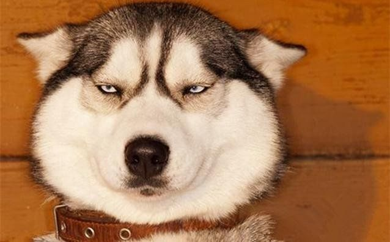

Husky
The origin of the husky name, is derived from its unique hoarse voice.What's more, Husky unique appearance, expression on his face that sometimes, really let you know.
- Scientific Name: Siberian Husky
- Average LIfespan: 13-18 years
- Behaviour: escape artists
- Size: Medium sized dog
A Siberian Husky's coat is thicker than that of most other dog breeds, comprising two layers: a dense undercoat and a longer topcoat of short, straight guard hairs. It protects the dogs effectively against harsh Arctic winters, but the coat also reflects heat in the summer.